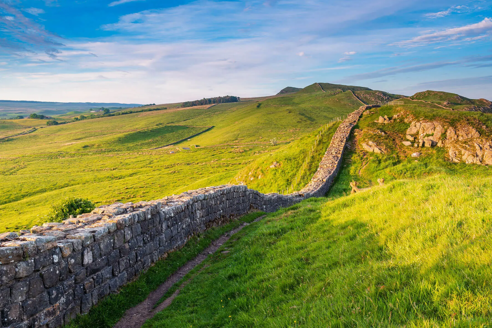

Border Collie
About the Border Collie
The Border Collie is widely regarded as the most intelligent dog breed, known for its incredible work ethic, agility, and herding ability. Bred to herd sheep in the rugged border regions of Scotland and England, this breed has earned its reputation as a brilliant and tireless working dog.
Physical Characteristics
- Size:
- Males: 19-22 Inches tall, weighing between 30-45lbs.
- Females: 18-21 Inches tall, weighing between 27-42lbs.
- Coat: Comes in two varieties, smooth or rough, both with a double coat. Common coat colors include black and white, but they can also be red and white, merle, or tricolor.
- Life Expectancy: 12-15 years.
Personality and Temperment
Border Collies are renowned for their intelligence, energy, and focus. They are ideal companions for active individuals or families who can provide plenty of physical and mental stimulation.
- Energy Level: Very high; they require significant daily exercise and thrive when they have a job to do.
- Social Traits: Generally friendly with people and dogs but can be reserved with strangers.
- Training: Extremely trainable and eager to please, they excel in obedience, agility, and advanced canine sports.

History and Origins
The Border Collie has its origins in the borderlands between Scotland and England, where it was bred to herd sheep in challenging terrain. Its name comes from the region and the word "collie," a Scottish term for sheepdogs. Recognized for their unparalleled herding instincts and intelligence, Border Collies became indispensable to shepherds. Queen Victoria was particularly fond of the breed, helping to popularize it in the 19th century.
- Exercise Needs: Border Collies need at least 1–2 hours of rigorous daily exercise. Activities like running, hiking, fetch, and herding tasks are ideal. Mental stimulation, such as puzzle toys and training exercises, is equally important.
- Grooming:
- Shedding: Moderate year-round, with heavier shedding during seasonal changes.
- Regular Brushing: Brush at least twice a week to manage their coat and keep it healthy.
- Health Concerns:
- Common Issues: Hip dysplasia, progressive retinal atrophy (PRA), and epilepsy.
- Regular vet checkups and a healthy lifestyle are vital for their well-being.
- Diet: Provide a high-quality, age-appropriate diet and monitor their weight to prevent obesity.
Fun Facts About the Border Collie
- Herding Experts: Border Collies are known for their "eye," an intense stare used to control livestock.
- World’s Smartest Dog: A Border Collie named Chaser learned over 1,000 words, showcasing the breed’s intelligence.
- Record Holders: Another Border Collie, Striker, holds the Guinness World Record for the fastest car window opened by a dog!
- Shepherd’s Favorite: Many farmers and ranchers still rely on Border Collies as indispensable working dogs.
Is a Border Collie Right for You?
If you’re looking for an active, intelligent, and hardworking companion, the Border Collie might be your perfect match. They thrive in homes where they have a purpose, whether it's herding, competing in dog sports, or participating in regular training sessions. Border Collies require experienced and dedicated owners who can meet their high energy and mental stimulation needs.